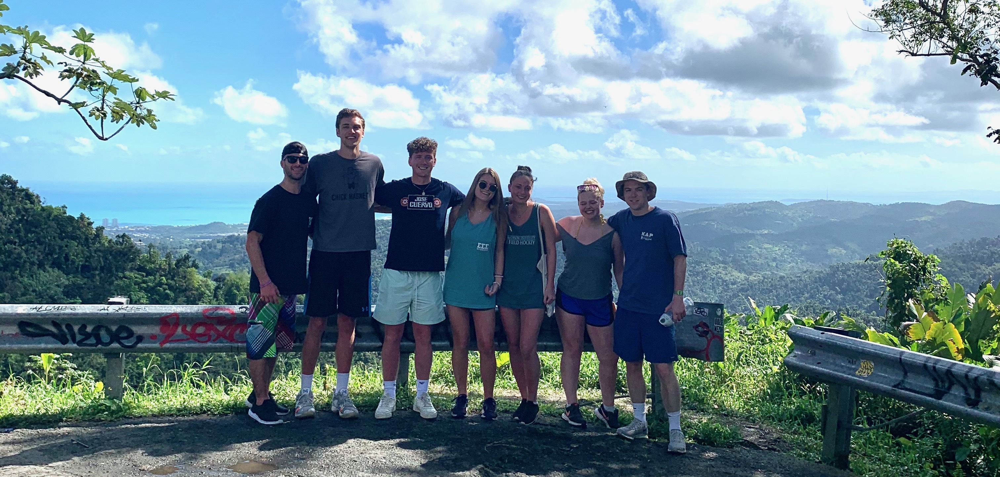
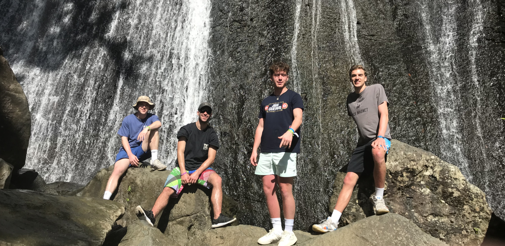
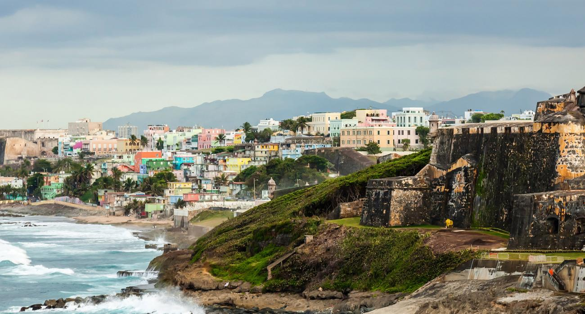
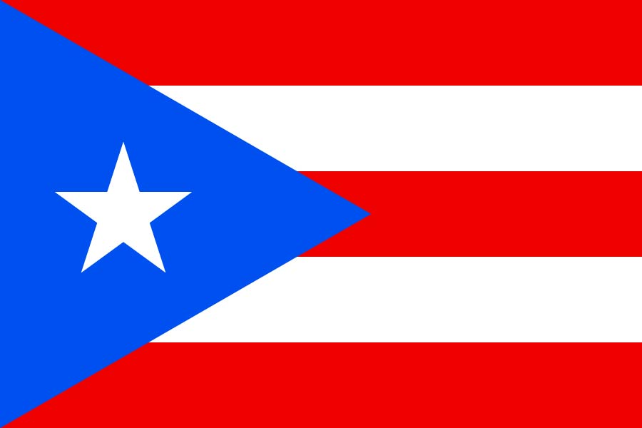

Have Fun on the Island
Inside Rio Mar Real Estate
The Beautiful Beaches
Being a resort community, Rio Mar Estate is full of amenities. It is situated on over a mile on a beautiful beach. All beaches in Puerto Rico are public property and everyone is allowed to use them, like the local one Loquillo. However, Rio Mar Estate is so large that it makes the beach difficult to access for anyone not staying in the community or the nearby condo complexes. This allows for a quieter beach experience than in San Juan. It is very easy to find beautiful shells and sand dollars if you walk north/west from the Wyndham hotel along the beach.
The Refreshing Pools
When you stay at our villa, you have access to three large resort pools right outside your door. Two of the pools are in front of the Wyndham Resort: the Activity Pool and the Quiet Pool. The Activity Pool has a small water slide, volleyball net, and plenty of space to play games. Near it is a small splash pad for younger kids plus a jacuzzi tub. The Quiet Pool is in the middle of the pool area and has a rock waterfall along with another jacuzzi. There is also a private pool inside the villa complex that I suggest you should also checkout which is down the street from our Villa.
Rio Mar Villa Private Pool
Play Some Golf, or Tennis
Inside the gates of Rio Mar, you will find two 18 hole golf courses – the River Course and the Ocean Course, in addiiton to the Caribbean’s largest tennis facility. The golf course also has a practice range which is located next to a large tennis center. You can go to the club house to reserve a tee time or get access to the practice range. The tennis center has its own clubhouse where you can inquire about use of the facilities. The tennis center features 11 Hard courts and twoclayhard courts, with four lit for evening play, so you can ace your backhand day or night.
Explore outside Rio Mar Real Estate
El Yunque Rainforest
When you come to Puerto Rico, the number one exploration I suggest everone does is venture to El Yunque, the national rainforrest of Puerto Rico. To get to El Yunque from Rio Mar, return back to Highway 3 in Rio Grande. Cross the highway at the stop light to enter Palmer, the small town at the foot of the rainforest. Find parking along the main road here (PR 955). On this road is El Portalito, a community based hub for El Yunque which is a great place to start your adventure into the rainforest. Here you can get maps, information about which trails are open, and buy souvenirs.
El Yunque has many trails and scenic overlooks. There are so many open sites along the road to stop to see the landscape of the forest. This is the perfect place to get group photos before you start in the rain forrest.
Once your in the rain forrest, Take the Angelito Trail hike and swim in Rio Mameyes. Bring your swimsuit, sunscreen, a backpack with water and snacks, towels, and plan to spend the day basking in the wild and serene beauty of Puerto Rico! The water is crystal clear and very refreshing. This will be a tiring day, but well worth it seeing a part of the island one will never forget
The city of San Juan
The other must-do while staying in Rio Mar Real Estate is to visit Puerto Rico’s most iconic sites and party nightlife in Old San Juan. This is another day-long adventure that you can schedule renting a car or taking Uber instead. The drive is about 50 minutes. But it is well worth it.
During the day I suggest seeing and touring two forts in Old San Juan which are part of the city. These should be a high priority on your list of places to see while visiting the old city. Both are a few hundred years old and well preserved.
Stay till the night-time, because that's when the party starts. One will see the streets packed with locals and tourists with a vibe that is lively and fun. Bring your walking shoes, and credit card, because Old San Juan is a highly walkable area with lots to see and spend money on. I suggest going to Calle de Sebastian, a street filled a strip of bars which is favorite among locals Thursdays, Fridays, and Saturdays. If one is looking for a more nightlife atmosphere, head over to Condado is right near San Juan with more clubs and bars.

There are so many more explorations and activities one can do around the island due to its marvelous landscape, especially in the Rio Grande Area. This makes Puerto Rico an ideal location for numerous outdoor activities, some of which are listed below. It is hard to keep track of what one can do during their time on this island that packs amazing diversity of sights, scenery, and culture.
